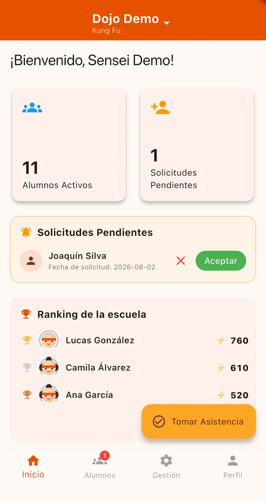
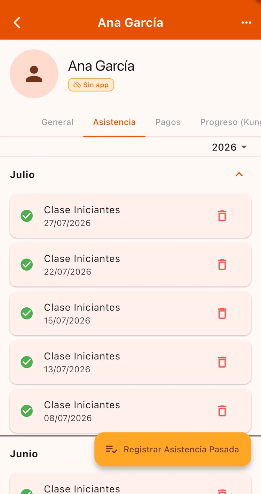

¿Para qué sirve?
Reemplaza el cuaderno. Te lleva menos de un minuto por clase y te queda el historial completo de cada alumno — así te das cuenta cuando alguien se empieza a ausentar, antes de que abandone.
Antes de empezar
- Tener los horarios cargados.
- Tener alumnos activos en la escuela.
Paso a paso
Tocá «Tomar Asistencia»
En la pantalla de Inicio tenés el botón Tomar Asistencia. La app busca las clases de hoy y te pide que elijas cuál vas a registrar.

Marcá a los presentes
Vas a ver la lista de alumnos. Tocá cada uno para marcarlo presente o ausente. Arriba tenés el contador de presentes y una barra de progreso.
Si tenés muchos alumnos, usá el buscador o los filtros de Presentes / Ausentes.
asi-checklist
Listo, se guarda solo
No hay botón de guardar: cada toque se registra al instante. Podés salir de la pantalla cuando termines.
¿Te olvidaste de una clase?
Entrá a la ficha del alumno, pestaña Asistencia, y tocá Registrar Asistencia Pasada. Elegís la fecha y la clase.

Cada asistencia le da Nivel de Poder al alumno y lo hace subir en el ranking de la escuela. Es lo que hace que quieran venir.